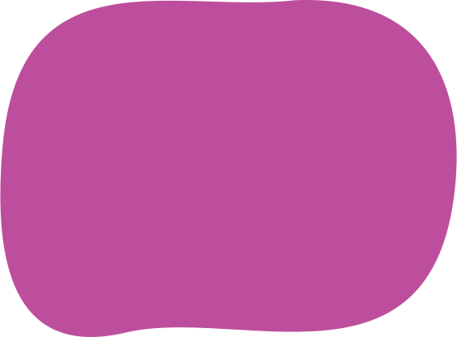

Ceci n’est pas une route. It’s a great place to be!


Surlepont is an action group of Anderlecht inhabitants that strives to foster Marchant bridge as an iconic, green & urban social space.
The future of the bridge is about to be decided. Surlepont wants to give a voice to all the residents and passers-by who value this place and support the idea of an active transport bridge.
The place is so unique and valuable because it combines:
An iconic viewpoint that invites you to stay and experience
An urban social space that motivates you to meet and participate
A green corridor that promotes active mobility and healthy living